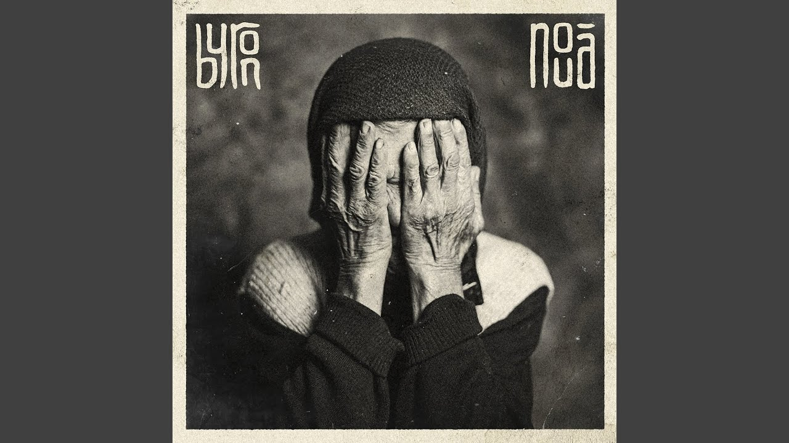

apă - Stiri online despre apă in ziarul Cuget Liber de ... Rețetă chefir de apă. Rețeta clasică e următoarea: 6 linguri de zahăr, 6 linguri de granule, 2 felii de lămâie, 10 stafide sau boabe de strugure (de departe, prefer cu struguri proaspeți, cea cu stafide miroase groaznic, mai ales că nu prea am găsit stafide nesulfurate) și 2 litri de apă.
ATLAS Help Center - atlas.app Salt la conținutul principal. Comunitate Trimitere solicitare Autentificare . ATLAS Help Center - atlas.app
MyEnel on the App Store De ce ar trebui să te alături mișcării? Pentru că luăm poziție împotriva cumpăratului la întâmplare. Ne ridicăm dincolo de asta, pentru a construi și a trăi într-o lume în care nu vom mai cumpăra fără oferte, fără discount sau fără cashback.
apă - Wikționar Joacă Jocuri Apă pe Y8.com. Apa este esenţa vieţii. Chiar dacă joci jocuri precum Fireboy şi Watergirl sau jocuri cu delfini şi rechini în apă, ai o multitudine de opţiuni pe Y8 categoria apă
Apa - Gaz - Canalizare | Distribuitor Valrom PVC–U nu eliberează in apă compusi toxici, fiind unanim acceptat pentru utilizare în rețele de transport și distribuție a apei potabile. Țevile de tubare se execută prin extrudare din PVC-U de culoare albastru RAL 5015. Îmbinarea între țevi se realizează prin înfiletare. Descriere filtru put forat:
Nemo Express Noi suntem ATLAS și cu asta ne ocupăm. Cu binele. Suntem aici nonstop, în orice moment în care ai nevoie de noi. Discută cu un Specialist licențiat!

Explorează Autentificare Join Media Fotografii Ilustrații Vectori Filme Alegerea Editorului Popular Images Popular Videos Community Blog Forum Artists Camere foto About Întrebări frecvente Termeni Confidenţialitate Despre noi API Language Čeština Dansk Deutsch English Español Français Indonesia Italiano Magyar Nederlands Norsk Polski Português Română Slovenčina Suomi Svenska Türkçe Việt ไทย Български Русский Ελληνική 日本語 한국어 简体中文 Autentificare Join Încarcă Fotografii Ilustrații Vectori Filme ✖ ‹ › Căutare sigură Populare Cele mai recente Viitoare Populare ✓ Alegerea Editorului Fotografii Imagini Fotografii ✓ Grafică vectorială Ilustrații Filme Orientare Orice orientare ✓ Orizontal Vertical Categorie Ştergeţi filtrele
152.392 Fotografii gratuite de De Apă
Imagini înrudite: mare natura ocean beach lac albastru sky apa albastră abstract 1870 1425 450 Picături De Apă De Apă 2333 2316 242 Valuri Răsărit De Soare 2115 1815 344 Arbore Lac Reflecţie 1327 1264 253 Stropire Splash Apă 1086 892 87 Picurare Picătură De Apă 1808 1869 283 Mare Nisip Coasta 1961 1453 238 Înotător Sport Înot 2159 1998 309 Ocean Cer Înstelat 1671 1570 251 Lotus Naturale De Apă 1716 1869 301 Dig Ponton Ocean Mare 1518 1561 210 Bule De Aer Scufundări 1200 1513 134 Lac De Apă Val 1905 1650 327 Beach Băutură Caraibe 1382 1022 263 Frog Fluture Lac 1484 1662 189 Sunrise Barcă 1409 1558 139 Beach Spumă Mişcare 1696 1599 230 Maldive Tropice 925 1031 100 Lebădă De Apă Alb 2053 2007 341 Apus De Soare Arbore 1001 848 153 Cascada Niagara Cascada 970 968 121 Lebădă De Apă Pasăre 1234 1299 171 Val De Apă Surf Ocean 803 721 128 Picătură De Apă De Apă 1385 1584 222 Val Oceanul Atlantic 1306 1135 156 Budist Ritual De Apă 1627 1566 249 Beach 1713 1159 317 Picătură Splash 1287 1176 117 Meduză Sub Apă Mare 1224 1279 131 Peisaj Lac 1815 1590 251 Italia Munţi 1937 1475 288 Femeie Tineri Ploaie 1135 1051 170 Plajă Marea Nordului 1107 1223 135 Penaj Pană Bird Roz 1251 1705 284 Biroul De Acasă 1092 1165 196 De Apă Mare Caraibe 896 648 175 Picătură De Ploaie 1160 1113 145 Abstract Apă Fundal 1428 1258 282 Schrecksee Bergsee 1323 1456 125 Panorama Bled Insula 655 663 121 Picătură De Apă Injecta 1243 1175 330 Bora-Bora 1088 914 148 Hintersee Bergsee Munţi 1111 1096 107 Tigru Pisica Mare 1722 1408 260 Polinezia 901 827 168 Frunze De Toamna De Apă 1306 1125 184 Delfinilor 1077 1022 232 Ploaie Picături Ploios 1053 1279 143 Mare De Apă Concediu 752 698 96 Căpşună Stropi De Apă 1117 1164 178 Beach Păsări 917 1039 103 Orizont Sky 867 1111 54 Bled Slovenia Lac 806 877 76 Kingfisher Pasăre 988 989 110 Femeie Om Pereche 976 1140 104 Elefant Tineri 1117 984 155 Picătură De Apă 664 824 92 De Apă Bazin De Înot 740 948 48 De Apă Valuri Reflecţie 844 754 117 Lebădă Copilul Swan Alb 940 1225 148 Piscina Înot 739 806 159 Stropire Splash Apă 158 89 36 Lac Vacă 686 886 79 De Apă Picătură Lichid 653 556 121 Picătură De Apă Picurare 855 924 96 Ocean Val Mare De Apă 638 539 123 Nufăr Floare Roşu 798 675 106 Terre Cinque Italia 910 963 113 Arbore Lac Reflecţie 805 690 114 Dans Yoga Meditaţie 980 1031 97 Nufăr Roz 604 539 95 Peşte Underwater 497 792 23 Sub Apă Modă Femeie 897 746 128 Barca House Cabana 91 72 23 Waterscape Flamingo 1126 1006 177 Beach Frunze Verde 1063 830 124 Copii Râul De Apă Baie 972 929 123 Lac Irene Colorado 876 766 80 Budist Ritual De Apă 795 819 100 Fluture Natura Insectă 782 935 85 Ocean Fată Mers Mare 915 819 131 Apus De Soare Ocean 773 959 100 Podul Golden Gate 903 895 81 Apus De Soare 751 797 79 Peisaj Iaht Sunrise 802 577 79 Femeie Spălat Vietnam 538 452 109 Flacon Apă Minerală 926 792 159 Panoramă Regensburg 626 655 62 Lebădă Swan Copii 537 641 47 Nufăr Nuphar Lutea 614 627 58 Balon De Săpun Colorat 495 649 64 Nufăr Plante Acvatice 1025 1016 143 Beach Roci Echilibru 1204 1050 140 Apus De Soare Copac 878 899 100 Frumos Bird Albastru 454 523 72 Val Mare De Apă 105 73 21 Beach Ocean Valuri 628 600 86 De Apă Picături 1026 1448 125 Beach Litoral Coasta 1254 1236 192 Răsărit De Soare Arbore 572 570 77 Coasta Plajă Stâncă Următoarea pagină › 152.392 Fotografii gratuite de De Apă ▲